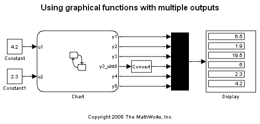
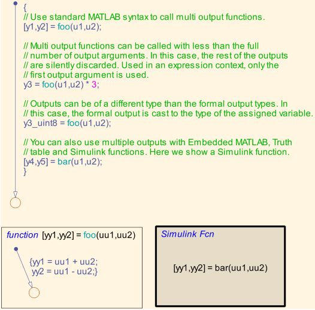
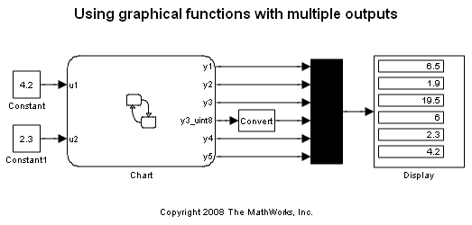
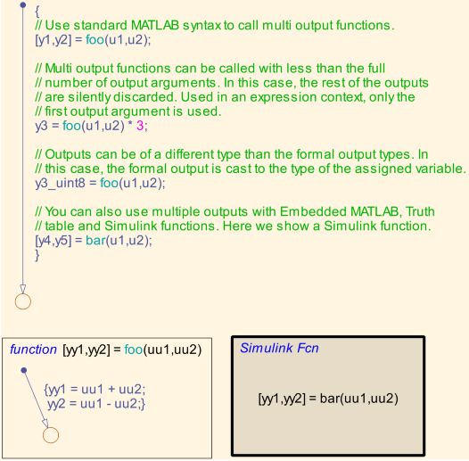

多出力のグラフィカル関数
このモデルでは、Stateflow® R2008a の新機能であるグラフィカル関数からの多出力機能を説明します。多出力の関数を呼び出すための構文は、MATLAB® の構文とまったく同じです。詳細は、グラフィカル関数を使用したアクションの拡張の節を参照してください。
 このモデルでは、Stateflow® R2008a の新機能であるグラフィカル関数からの多出力機能を説明します。多出力の関数を呼び出すための構文は、MATLAB® の構文とまったく同じです。詳細は、グラフィカル関数を使用したアクションの拡張の節を参照してください。
 